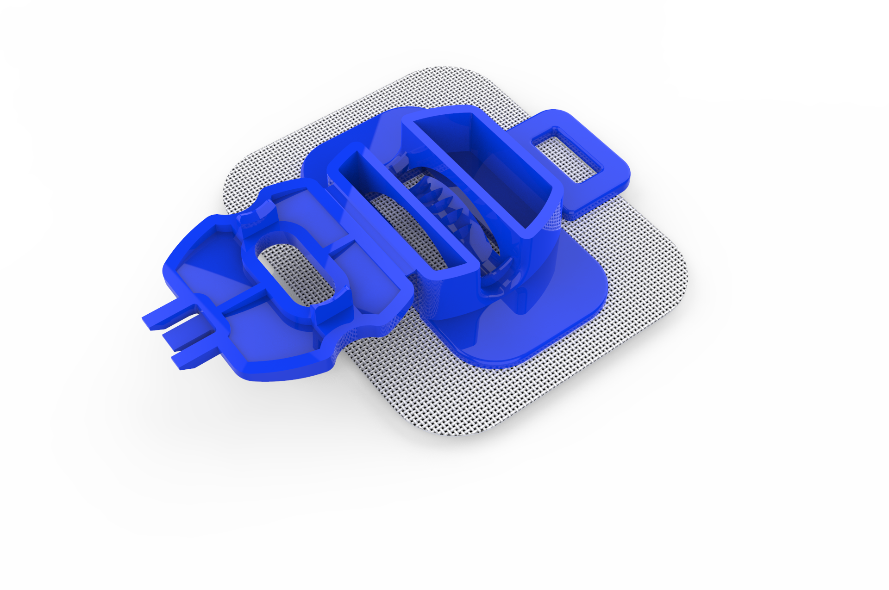
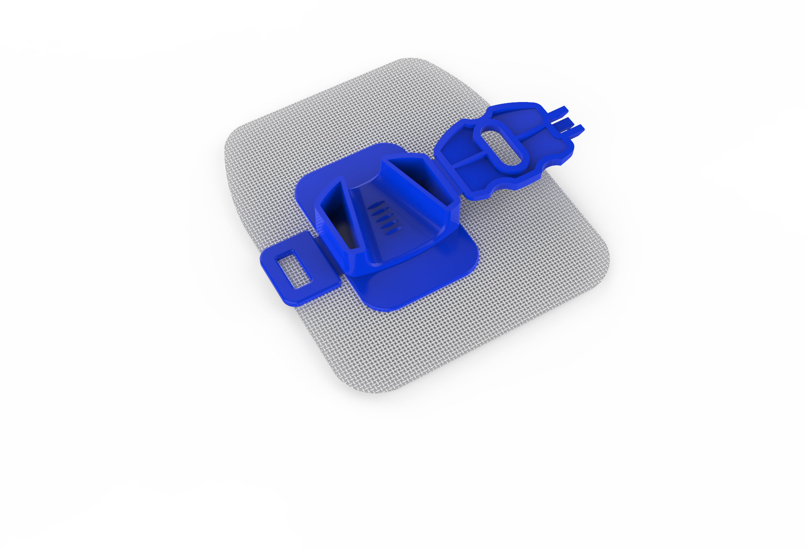
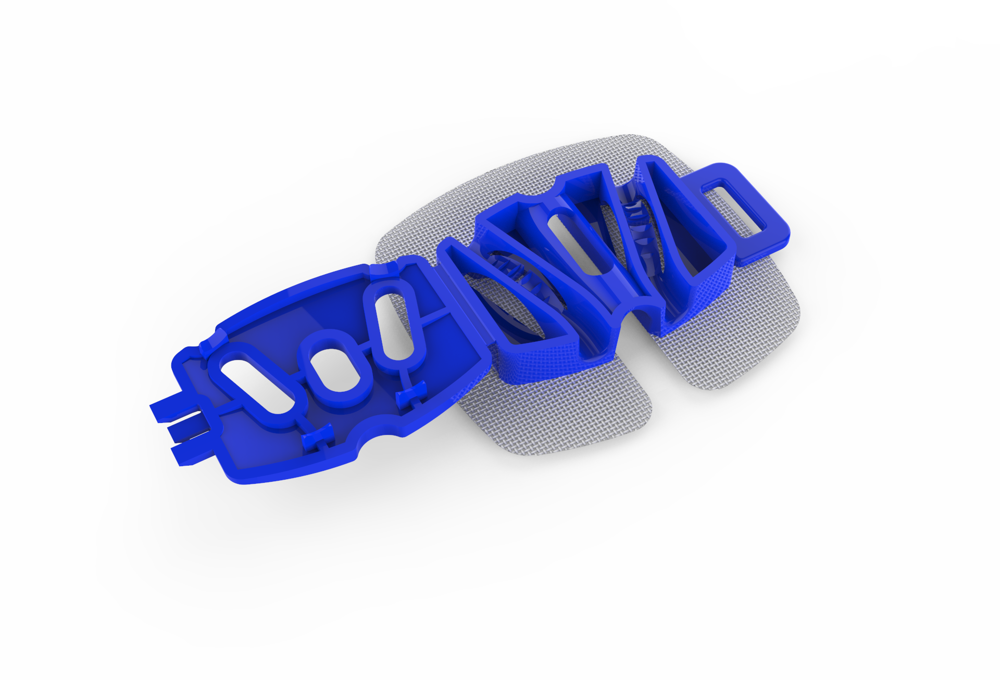

Where we choose to work
Device categories that sit underneath daily care in neurology and vascular access, are bought in volume, and have seen little product change.
Alera Medtech redesigns the devices neurologists, vascular teams and nursing staff reach for every shift. Categories where the product on the shelf has not changed in a long time, and where the people using it have learned to work around it.
We work in categories that are high volume, low margin and quietly overdue. Modern materials, tighter tolerances, and a design process that starts by watching the device get used rather than by reading its spec sheet.
Device categories that sit underneath daily care in neurology and vascular access, are bought in volume, and have seen little product change.
Usability first. Grip, one-handed application, signal stability under real ward and operating room conditions, and packaging that opens the way the room expects.
A United States manufacturing partner and our own Indian operation in Pune, both working to a single quality system, so scale does not arrive at the cost of consistency.
Priced so that a health system can standardize on the better device rather than reserve it for selected units.
A handheld, quantitative point-of-care nerve conduction test. It measures sural sensory nerve conduction velocity and sensory nerve action potential amplitude and returns a result in the room, which makes an objective measurement available in settings that do not have access to a nerve conduction laboratory.
Clinicians, health systems, distributors and purchasing teams. We reply within two business days.
Contact the teamTwo specialties. Every product below carries its regulatory classification where one is established, and a link to its released instructions for use.
Handheld quantitative nerve conduction test for the sural nerve. Measures sensory nerve conduction velocity and sensory nerve action potential amplitude at the point of care.
The electrode families used in diagnostic electromyography, intraoperative neurophysiological monitoring and electroencephalography.
One securement platform in four configurations, each matched to the catheter it holds. All four are adhesive skin-attachment anchoring devices applied without additional tape or sutures.
Holds an indwelling urinary catheter in a fixed position at the leg. Applied with one hand. A transparent window allows the site to be assessed without removing the device.

Secures a dialysis catheter and its extension tubing at the exit site, with the same adhesive skin-attachment approach as the rest of the platform.

Secures a peripheral intravenous catheter and routes the extension set through a retaining loop. Supplied in adult and pediatric sizes.

DPNCheck and its predecessor device NC-stat have been studied in independent peer-reviewed research published since 2006. Every figure on this page carries a numbered citation, and every citation names the reference standard the figure was measured against.
DPNCheck reports sural sensory nerve action potential amplitude and sensory nerve conduction velocity. Results are compared against normal limits that the site configures at setup. The default is an age and height adjusted limit set drawn from the published normative monograph, and fixed and custom limit sets are also available.3 Results outside the configured limits are reported as abnormal. Interpretation is made by the clinician.
Reference standards differ between studies, so each row names the comparator the figure was measured against. Figures are not interchangeable across rows.
| Finding | Value | Reference standard | Source |
|---|---|---|---|
| Sensitivity and specificity at a sensory nerve action potential threshold of 6 microvolts | 88% / 94% | Age and height standardized reference nerve conduction study values | Ref 4 |
| Sensitivity and specificity at a conduction velocity threshold of 48 metres per second | 82% / 94% | Age and height standardized reference nerve conduction study values | Ref 4 |
| Reliability at individual measurement time points | Moderate to good | Intraclass correlation, repeated measurement | Ref 5 |
| Reliability under a repeated measures design | Moderate | Intraclass correlation, repeated measurement | Ref 5 |
Grouped by what each study examined. Studies that used the device as an outcome measure in a therapy trial are listed separately, because they tell you about the therapy rather than about the device.
These trials studied a therapy or another diagnostic method and used the device to measure nerve function as one endpoint. They are relevant context. They are not evidence of the device's accuracy.
Requests for the full bibliography, including studies not listed here, can be sent to regaffairs@aleramedtech.com.
The regulatory identity of the products described on this site.
| Product | Class | Regulation | Product code | Clearance | Status |
|---|---|---|---|---|---|
| DPNCheck | II | 21 CFR 882.1550 | JXE, IKN | K041320 | Prescription device |
| SureSet Foley Catheter Securement Device, model SSFL | I | 21 CFR 876.5130 | EYJ | n/a | Professional use |
DPNCheck is a prescription device. Federal law restricts this device to sale by or on the order of a licensed healthcare practitioner.
Alera Medtech LLC is registered with the United States Food and Drug Administration under establishment registration number 3042840696, in the roles of specification developer, complaint file establishment and distributor.
Manufacturer identification for each device appears on the device label and in the instructions for use supplied with the device.
The SureSet Foley Catheter Securement Device, model SSFL, holds a coding verification from the Pricing, Data Analysis and Coding contractor for HCPCS code A4333, urinary catheter anchoring device, adhesive skin attachment, each. Coding verification confirms the code that describes the product. It is not a statement about coverage, payment or reimbursement, which are determined by each payer under its own policies.
Product availability differs by market. Not every product described on this site is available in every country in which Alera Medtech has an office, and regulatory status in one jurisdiction does not imply status in another. For the current market list for a specific product, contact regulatory affairs.
To report a product complaint or an adverse event involving an Alera Medtech device, contact regulatory affairs with the product name, model or catalog number, lot number where available, and a description of what occurred.
Released instructions for use for the catheter securement platform. Always read the instructions supplied with the device. If the copy you hold differs from the one published here, contact regulatory affairs before use.
| Product | Configuration | Language | File |
|---|---|---|---|
| SureSet Foley Catheter Securement Device | Model SSFL | English (US) | Download PDF |
| Dialysis Catheter Securement Device | n/a | English (US) | Download PDF |
Instructions for use for DPNCheck and for the Cernode electrode range are supplied with the product. Request a copy from regulatory affairs.
Alera Medtech works on devices that sit underneath daily care in neurology and vascular access. Needle and surface electrodes, intraoperative monitoring, point-of-care nerve conduction, catheter securement. High volume, routine, and largely unchanged for years.
These devices are bought by the case and used without much thought, which is exactly why they are worth redesigning. A small improvement in a device used ten thousand times a week compounds. Our work is modern engineering and materials applied to products the market has stopped paying attention to, protected by intellectual property that reflects an actual functional advance rather than a filing exercise.
A device should be obvious in the hand. If it needs explaining at the bedside, it is not finished.
Safety and comfort decide the design when they conflict with cost or speed.
We file on functional advances, not on decoration.
A better device that a health system cannot afford to standardize on has not improved anything.
We design with the people who use these devices, and we publish what the evidence actually says, including where it is limited. Clinicians, researchers and health systems interested in evaluation or collaboration are welcome to get in touch.
Leadership from medical device operators, engineers and clinicians who have taken products from concept to clinic before.
Founder of Arkoza Group, a Toronto-based family office investing in healthcare, information technology and real estate.
Co-founder of medical device and healthcare companies. Previously President of Capri Capital Partners and Partner at McKinsey & Company.
Managing Partner of UrbanX Global. Founded Noble Ventures, an advisory firm serving medtech and information technology companies. Previously Chief Executive of Media DVX and President and Chief Operating Officer of Control Data Systems.
Registered nurse and healthcare executive. Previously Senior Vice President, Population Health and Chief Commercial Officer for DPNCheck at NeuroMetrix.
Medical device development, with issued United States patents spanning gynecology, orthopedics, oncology and wound care. Previously Boston Scientific, Hologic and AngioDynamics.
Early-stage life science and medical device leadership. Previously Chief Operating Officer of Bach Pharma. MBA, Yale School of Management.
Quality, regulatory and clinical research leadership at Johnson & Johnson, Edwards Lifesciences, Philips Healthcare and C.R. Bard. Former vascular access registered nurse.
Leads Alera's Pune manufacturing and operations, covering production planning, quality systems and regulatory coordination.
Clinicians, health systems, distributors and purchasing teams. We reply within two business days.
Alera Medtech LLC
103 Fox Road, Suite 611
Waltham, MA 02451, USA
+1 888 702 5372
Alera Medtech Private Limited
Office No. 302, The Capital Bldg, B 5/1A,
Baner Pashan Link Road, Pune - 411045, India
Alera Medtech Private Limited
25C Hardware Park, Sy. No. 1/1
Raviryal, Hyderabad, Telangana 500005, India
2408 One Lake Plaza, 24th Floor
Cluster T, Jumeirah Lake Towers
Dubai, UAE
Classification, clearance, instructions for use, complaints and adverse event
reports.
regaffairs@aleramedtech.com
Distribution, evaluation samples and partnership discussions. Use the form below and select the distributor option.
If you are reporting a suspected adverse event or a product complaint, please email regaffairs@aleramedtech.com directly rather than using this form, so that it reaches regulatory affairs without delay.
Last updated: October 2026
Alera Medtech respects your privacy and is committed to protecting the personal information you provide through our website.
We may collect information such as your name, email address, phone number, company name, and any other details you submit through our contact forms or email communications.
We may use your information to:
We do not sell your personal information. We may share information with authorized service providers or relevant authorities when necessary for business operations or to comply with applicable law.
We take reasonable measures to protect personal information against unauthorized access, loss, misuse, or disclosure. However, no method of electronic storage or online transmission is completely secure.
Our website may use cookies or similar technologies to support website functionality and understand website usage. You can manage cookies through your browser settings.
Our website may contain links to third-party websites. Alera Medtech is not responsible for their content or privacy practices.
Depending on applicable law, you may have the right to request access to, correction of, or deletion of your personal information.
For general questions or privacy-related inquiries, contact us at info@aleramedtech.com .
For regulatory inquiries, email regaffairs@aleramedtech.com .
We may update this Privacy Policy from time to time. Updates will be published on this page.
Last updated: October 2026
These Terms of Use govern your access to and use of the Alera Medtech website. By using this website, you agree to these terms.
You agree to use this website only for lawful purposes. You must not attempt to interfere with its operation, gain unauthorized access, or misuse its content.
The information on this website is provided for general informational purposes. We make reasonable efforts to maintain accurate information but do not guarantee that all content is complete, current, or error-free.
Product information, specifications, availability, and intended uses may vary by market and may change without prior notice. Not all products described on this website are available in every country.
Website content is not a substitute for professional medical advice, diagnosis, or treatment. Products must be used in accordance with their applicable instructions, labeling, and regulatory requirements.
Unless otherwise stated, the text, images, logos, graphics, and other content on this website belong to Alera Medtech or their respective rights holders. Reproduction or distribution without permission is prohibited where applicable law requires authorization.
This website may contain links to external websites for convenience. Alera Medtech does not control and is not responsible for the content or practices of those websites.
To the extent permitted by applicable law, Alera Medtech disclaims warranties regarding the availability, accuracy, and completeness of website content. Use of the website is at your own discretion and risk.
To the extent permitted by applicable law, Alera Medtech shall not be liable for losses or damages arising from your use of, or inability to use, this website or reliance on its content.
We may revise these Terms of Use from time to time. Updated terms will be published on this page.
For questions about these terms, contact info@aleramedtech.com .
For regulatory inquiries, email regaffairs@aleramedtech.com .